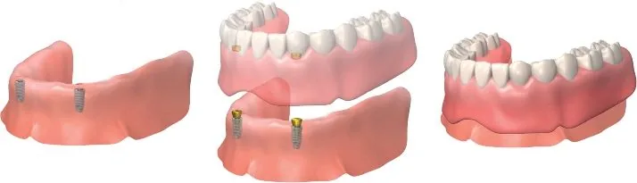

임플란트 틀니
임플란트 틀니는 임플란트 몇 개를 심고 연결장치로 틀니를 고정하는 방법입니다. 모든 치아를 임플란트로 하기 부담스러울 때, 잇몸만으로 버티는 틀니가 잘 빠지는 불편을 줄이려고 씁니다. 끼웠다 빼는 탈부착식과 고정하는 고정식이 있습니다.
기존 홈페이지 2026년 11월 내용 기준
한눈에 보기
- 진료 층
- 2층
- 방식
- 탈부착식 · 고정식
- 진행
- 임플란트 식립 → 연결장치 체결 → 틀니 고정
- 심는 개수
- 잇몸뼈 상태를 보고 정합니다확인 중
- 비용
- 진찰 후 항목별로 미리 안내합니다


일반 틀니와 다른 점
일반 틀니는 잇몸이 받치고, 임플란트 틀니는 잇몸뼈에 심어 둔 임플란트의 연결장치에 고정합니다. 전체 틀니는 씹는 힘이 잇몸에 몰려 잇몸이 눌리고 차츰 줄어들 수 있는데, 임플란트 틀니는 임플란트가 힘을 나눠 받아 잇몸이 받는 부담을 줄이려는 방법입니다.
설명을 위한 그림이며 실제 모양은 사람마다 다릅니다.
이런 경우 상담합니다
- 남은 자연치아가 거의 없는 경우
- 많은 임플란트를 심기에는 비용이 부담되는 경우
- 완전 틀니가 자주 빠져 불편한 경우
- 부분 틀니를 끼고 빼는 일이 번거로운 경우
세 단계로 진행합니다

임플란트 식립
위아래 잇몸뼈 가운데 단단한 자리에 임플란트를 심습니다.
연결장치 체결
임플란트가 잇몸뼈와 붙으면 임플란트와 틀니를 잇는 연결장치를 만들어 체결합니다.
틀니 고정
만든 틀니를 연결장치에 끼워 고정합니다.
자주 묻는 질문
임플란트 틀니는 임플란트를 몇 개 심나요?
잇몸뼈 상태를 보고 개수와 자리를 정합니다. 진찰과 촬영 뒤 안내합니다.
임플란트 틀니도 빼서 관리하나요?
탈부착식은 끼웠다 빼서 관리하고, 고정식은 고정한 채 씁니다. 어느 방식이 맞는지는 상담에서 정합니다.
진료시간 · 오시는 길
031-683-7575경기도 평택시 안중읍 안중로 132
- 성심주차장을 이용하시면 주차권에 병원 도장을 찍어 드려 무료로 주차할 수 있습니다(이면도로 주차는 유료).
- 본원 뒤 주차장은 자리가 좁습니다. 이용하실 때는 주차권을 받아 가셔야 나가실 수 있습니다.
진료시간
- 월
- 전체
- 오전 9시 ~ 오후 6시교정과 오전 10시 ~ 오후 6시
- 화
- 전체
- 오전 9시 ~ 오후 8시
- 수
- 3층
- 오전 9시 ~ 오후 6시
- 목
- 2층
- 오전 9시 ~ 오후 8시
- 금
- 전체
- 오전 9시 ~ 오후 8시2층 오전 9시 ~ 오후 6시교정과 오후 2시 ~ 8시
- 토
- 전체
- 오전 9시 ~ 오후 2시점심시간 없음
- 점심
- 평일
- 오후 1시 ~ 2시
- 휴진
- 일요일 · 공휴일 휴진
가운데 칸은 그날 진료하는 층입니다. 임플란트는 2층 진료입니다.